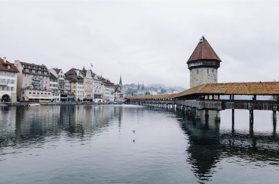
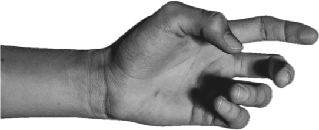
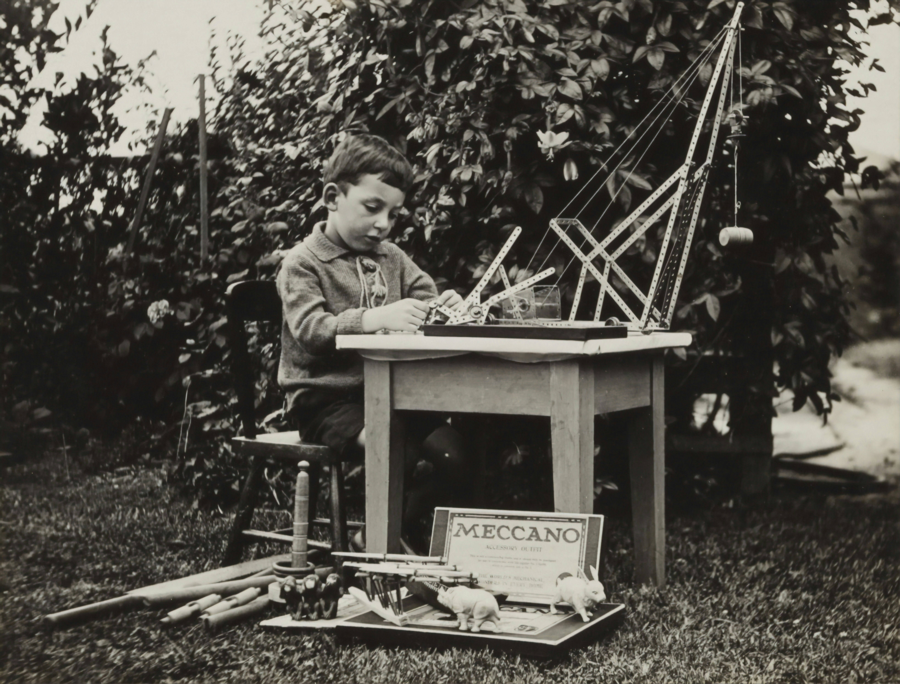

Is Josef Müller-Brockmann an
amazing artist or better-suited, a philosopher?
Josef’s Journey
Born in 1914, Switzerland. During his earlier years, Josef started as an apprentice although due to the big boss not being around much, he quit after his second year. Despite knowing very little about typography or illustration he was determined to broaden his horizons...leading him to be taught by “two masters”, Ern and Alfred.
Josef became fascinated from the common habit his ‘masters’ had done. Ern and Alfred would take certain posters and designs from the streets and correct issues found in them - inspiring Josef to design posters.

After decades of admiring lectures naming them “wonderful human beings”, he was convinced he was the best Swiss graphic designer.
Humbling himself soon after studying his masters, Josef was not able to grasp the concept of quality in his work leading him to teach himself the core principles of design; layout, composition, form giving.
Comparing his work to another artist, Josef gave up on drawing and moved onto typography and photography. Developing new skills everyday - an admiration influenced him, his ultimate goal was to become as well-rounded as possible. Learning architecture, city planning, writing, sculpture, painting, product design, gardening, typography...everything! Being interested and gaining good contacts was only going to benefit in a brighter future.
“stay self critical, don't be satisfied with what you have done, don't accept an applause from outside, be your own self critical instance” - Josef Muller Brockmann

What really matters in Josef’s reality?
Ironically, perfect spacing and how a font tilts slightly left to right is what keeps Josef up at night. Josef undoubtedly cared about detail, that’s what made him a marvellous artist.
If typography is on long and short lines - what does that mean? Well...the longer the line, the more energy it takes to read. In contrast, if the line is too short a reader can lose energy. If anyone wants to be a good designer, they must learn to be the ultimate communicator of informative design. The best way to do that is through typography.
Psychology is the basis of all design, how typography is displayed, what colour it is, how thick or thin, if it has a light point or curve at the edges of each type...it all matters. Josef was a huge believer that “typography has the function to inform clearly and rapidly”. His most loved fonts had to be “aimless good formed alphabets” such as: Clarendon, Times, Baskerville, Alberts (by Berthold), Helvetica and Antiqua.
Always striving to be more, Josef wanted to be useful to society - maintaining a clear goal throughout his entire career and lifetime. A story that he mentioned in an Interview with Roger Remington in 1987 declared that Josef “made publicity, exhibitions and advertisements for companies that he worked with. One day, whilst reading in the newspaper, he seen that smoking was dangerous and caused cancer. Josef immediately afterwards rang his clients and cut ties - as he did not want to promote propaganda for a dangerous product; they created “bad formed products” that did not align with his morals.
After this incident, Josef reflected on a memory of his which was in relation to creating artwork for a political election propaganda, realising that he had also met people that were “very ambitious and egotistic and secondly social minded...they fought for their own profit then from the profit of society”.
Did you know?
Josef's dream was to study medication to help sick people

Striving for Greatness
Occupying his peers in design, Josef joined-in on writing a magazine named “New Graphic Design”. After a while, his publisher decided to discontinue the magazine stating that it was no longer cost-effective describing the content of the book to be “more-or-less worldwide”. The contents of the book contained research of Swiss graphic design influence of the 50th century, after the last world war.
Disciplined with his thoughts Josef kept repeating “the future must be better than the past and we have to contribute, to help and create better thinking in the future” continuing being a good person and prolonging an objective approach in his work.
Being a teacher, Josef held himself to a great standard to inspire the next generations of designers. His key tips were:
“You have to have eyes who are able to look 360 degree around yourself.”
Be interested in everything
Be inclusive of everyone, always learn from people in different professions
Be as well-rounded as possible
Negative feedback on Swiss design
Josef believed that Swiss people were all narrow minded, although exceptionally good at banking and that Swiss design does have a reduction and elimination of too many fantasy or creative ideas. Following by saying that his own work is “too try or too poor” but it is informative which is his goal. There will always be opinions, for or against certain designs although the tip to remember is that the designer is the main dictator.
“I think its more important to have a philosophy in your profession and for your life and to want first to be a useful member of a democratic society and not first successful, can can't beat sensational ideas.” - Josef Muller-Brockmann
Greed of humanity
Public success makes people less of a good person. Designers and people need to inspire and evolve for the better. Josef vocalises “we have too much artists as graphic designers and too few graphic designers with philosophy”. Materialistic and egotistical thinking is present everywhere in society. People making bombs and weapons, destructive materials...people should be thinking as human beings; traditional and outdated thinking is not wanted.
Painters are artists, Graphic Designers are the technicians of communication. Designers communicate about ideas and products for profit or for clients. The customer should be given the freedom and choice whether they should or should not by a product by the basis of clear objective design on or for the product. If not objective, the customer is not thinking with freedom of their own choice...building customers through trust and honesty retains true transparency.
Life changes, new inspiration is retrieved
Josefs wife passed away. She had been a member of an orchestra, playing the violin. Josef was swooned by the classical, movement, it transformed and transmitted into geometric elements in his design. Setting himself the creative task of transmitting music elements and feelings into a medium in geometric forms and composition. Achieving a analysable, easily digestible piece.
Maintaining discipline, being strict and resourceful with ideas, images, art; cherry-picking what the focus is and mastering it. Remembering that time is valuable.
El Lissitzky was a admiration of Josef’s, the marvellous and genius designer in all fields, his theory’s being a great motivator. Although Josef grew to adapt the idea that admiring ones self is the greatest, he had extravagant ideas but sadly was not capable of them.
In the 1987, Roger Remington Interview Josef additionally mentions that he is very self critical and that young designers should always have this in their mind when thinking of pioneers. Josef continued this passage by giving students advice, advising to maintain being self critical and to be ones critic - serious and strong. Attentiveness is key and to not compare..all teachers make mistakes, no teacher is free from them. Students and teacher will cease to have work is there were never any mistakes.